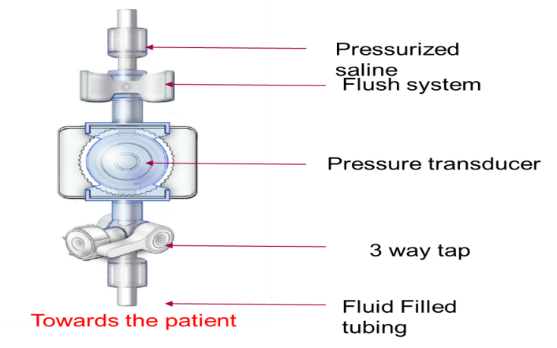
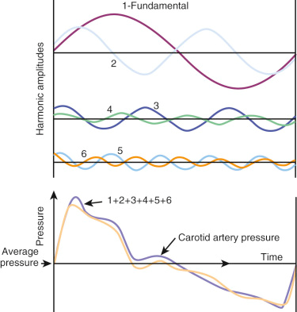
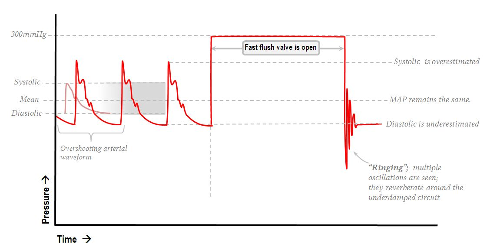
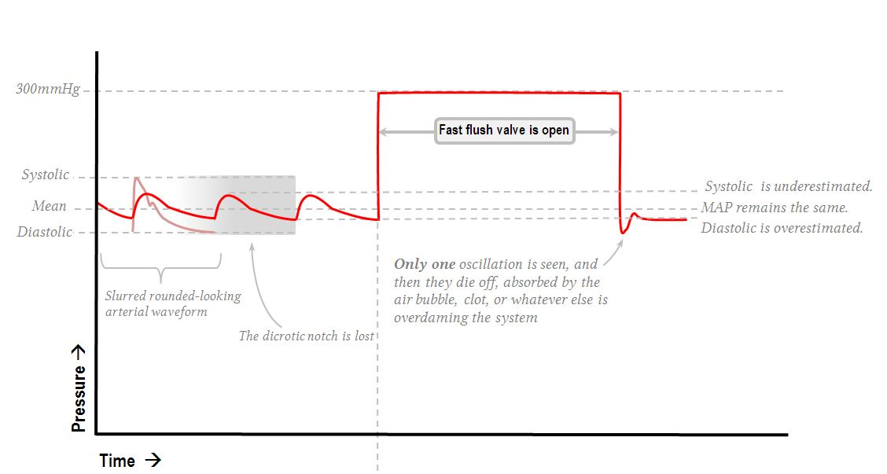
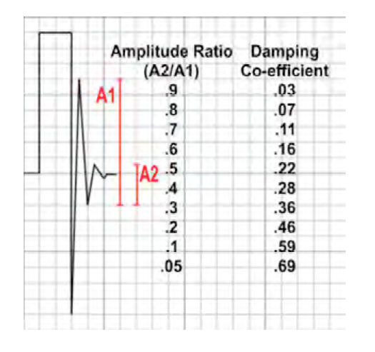
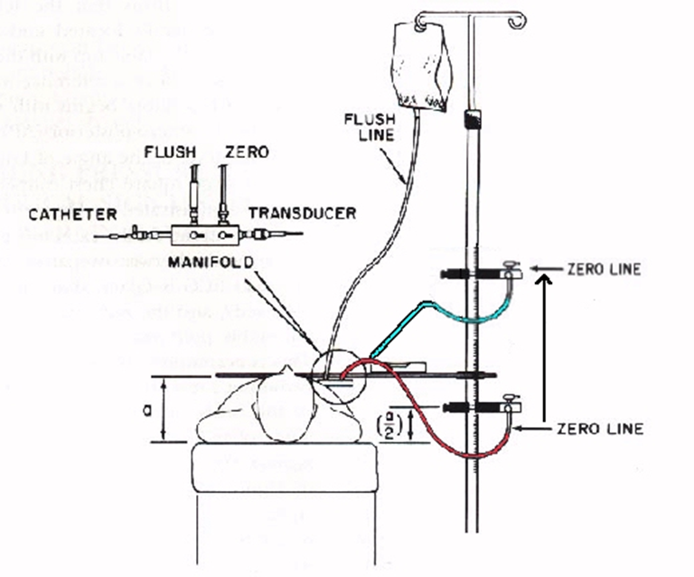

Module I3
Pressure measurement and waveform fundamentals
Everything in the rest of this pathway is read off a trace. Systolic and pulse pressure variation, the a wave you place a cursor on, the wedge you compare against a diastolic pulmonary artery pressure, the mean arterial pressure you titrate a vasopressor to: every one of them is a number a machine inferred from the deflection of a thin membrane at the end of a tube full of saline. Before any of those inferences can be trusted, the chain that produced them has to be understood well enough that you can tell a physiologic finding from an artifact of the apparatus.
Module N7 T1 gave the procedure: zero the transducer, level it at the phlebostatic axis, run the flush system at 300 mmHg, check the tracing. This module gives the reasons. It follows the signal in the order it travels, from the vessel to the display, and then turns to the two reference problems that sit underneath every number the system reports: what zero means, and what the pressure on the far side of the vessel wall is doing. That second question, transmural pressure, is the concept the arterial variation and central venous waveform modules are built on, and it is where this module ends.
From a pressure inside a vessel to a number on a screen
The chain has five links. Blood pressure at the catheter tip displaces fluid in the catheter. The displacement travels up a column of saline in non-compliant tubing to a flexible diaphragm. The diaphragm deflects, and a strain gauge bonded to it converts the deflection into a change in electrical resistance. A bridge circuit converts that into a voltage. An amplifier and an analog to digital converter turn the voltage into a stream of numbers, and the monitor turns those into a trace and three displayed values.

The electrical end of that chain is not where errors come from. Gardner tested 75 bedside monitors and 100 disposable transducers against a dead weight tester accurate to 0.05 percent, and at an applied 100 mmHg the monitors averaged 99.90 plus or minus 0.83 mmHg and the transducers 100.03 plus or minus 0.55 mmHg. If a displayed pressure is wrong, the error is almost never in the transducer or the monitor. It is in the fluid column in front of the diaphragm, in the height at which the diaphragm has been placed, or in what the clinician assumed the number means. Those are the three subjects of this module, and all three are correctable at the bedside.
The diaphragm, the strain gauge and the bridge
A strain gauge is a conductor whose resistance changes when it deforms. Stretch it and it becomes longer and thinner, raising resistance. Compress it and resistance falls. The change is on the order of fractions of a percent, and it has to be extracted from a much larger baseline resistance that also drifts with temperature. A Wheatstone bridge solves both problems at once.
![Three step diagram. Step one shows a flexible diaphragm deflecting under pressure arriving up the fluid column, with a strain gauge bonded to it. Step two states that two gauge elements are stretched so their resistance rises while two are compressed so their resistance falls. Step three shows a Wheatstone bridge drawn as a diamond of four resistors with excitation voltage at the top, ground at the bottom, and the output voltage taken across the two side nodes, with the stretched and compressed elements placed in opposite arms.](img/i3-wheatstone-bridge.svg)
Two features of the bridge explain the behavior of the whole system. Its output is a difference, so anything acting equally on all four arms cancels. And its balanced state gives zero output, which is what makes zeroing possible: opening the system to atmosphere and telling the monitor that the present voltage means zero calibrates the offset in one step. What zeroing cannot calibrate is the gain, the mmHg each microvolt represents. Disposable transducers are built to a fixed sensitivity, which is why Gardner argued for abandoning bedside mercury manometer calibration.
The trace is late, by a knowable amount
Mechanical events follow electrical ones, and the pressure wave then has to travel from the aortic root to wherever the catheter tip sits. The interval from the R wave to the foot of the arterial upstroke runs roughly 120 to 200 milliseconds.
![Two aligned traces. The upper trace is an electrocardiogram with the R wave marked by a dashed vertical line. The lower trace is an arterial pressure waveform whose upstroke begins at a second dashed vertical line to the right of the first. A double headed arrow between the two dashed lines is labelled 120 to 200 milliseconds, and a note states that the interval has two components in series: the pre-ejection period of roughly 55 milliseconds and the transit time of the pressure wave out to the catheter tip.](img/i3-electromechanical-delay.svg)
Any waveform feature timed against the electrocardiogram is therefore timed against an event that has already happened. That is a nuisance on an arterial trace and a real source of error on a venous one, where the a, c and v waves are identified by their relationship to the P wave and the QRS. Nor is the delay fixed across patients, since transit time depends on arterial stiffness and on distance to the catheter, and the pre-ejection period lengthens as contractility falls. Use the electrocardiogram to decide which cardiac event a deflection belongs to, never to assume it was generated at the instant it appears.
Every pressure waveform is a sum of sine waves
A sine wave is described completely by three quantities: frequency, in cycles per second or hertz, amplitude, the size of its excursion, and phase, its position in the cycle relative to a reference. Nothing about an arterial trace looks like a sine wave, and it does not have to. Fourier's result is that any periodic waveform, however complicated, decomposes exactly into a sum of sine waves whose frequencies are integer multiples of the repetition rate of the waveform.
For a pressure trace the repetition rate is the heart rate. The sine wave at that frequency is the fundamental and those at two, three, four times that frequency and upward are the harmonics. A heart rate of 60 gives a fundamental of 1 Hz with harmonics at 2, 3 and 4 Hz. A heart rate of 120 gives a fundamental of 2 Hz with harmonics at 4, 6 and 8 Hz.

The figure carries the central fact about fidelity: harmonic amplitude falls steeply with harmonic number. A crude reconstruction that gets the general shape right needs only the fundamental and the second harmonic. The sharp features, above all the steep systolic upstroke and the notch, need the higher ones, because a rapid change in pressure is exactly what high-frequency components encode. Beyond the tenth harmonic the amplitudes have fallen far enough that adding them changes the trace imperceptibly.
That turns an abstract requirement into an arithmetic one. A system does not have to reproduce all frequencies, only every frequency up to some multiple of the patient's heart rate, and the conventional target is the first eight harmonics. Work it at the worst case a general intensive care unit routinely produces, a heart rate of 180:
Twenty-four hertz is the origin of the rule that a pressure monitoring system needs a natural frequency above roughly 20 Hz, and it is also why that number is a floor rather than a comfortable target. At a heart rate of 100 the requirement is only 13 Hz, so a mediocre system looks adequate on a calm postoperative patient and fails on the same patient in atrial fibrillation with a rapid response. Fidelity is a joint property of the tubing and the heart rate, so a system can become inadequate without anyone touching it.
Natural frequency and resonance
Every mechanical system has a frequency at which it prefers to oscillate when disturbed and left alone. Push a playground swing once and let go, and it swings at a rate set by the length of its chains and nothing else. That is its natural frequency. A catheter, a length of tubing and a diaphragm form a mechanical system in exactly the same sense, with the mass of the fluid column playing the part of the seat and the elasticity of the diaphragm and tubing walls playing the part of gravity.
Trouble arises when the system is driven near that frequency. Keep pushing the swing in time with its own rhythm and each push adds to the last, and the arc grows far larger than any single push would justify. This is resonance, a general property of oscillating systems rather than a quirk of monitoring equipment. The Tacoma Narrows bridge collapsed in 1940 because wind passing beneath the deck excited it near its own frequency and the amplitude built until the structure tore apart. A pressure monitoring system driven near its natural frequency does the same thing on a smaller scale: it amplifies the signal it is supposed to be reporting.
Modeling the catheter and tubing as a mass on a spring gives the natural frequency directly, and every entry on the bedside list of faults appears somewhere in the expression.
Read the terms one at a time and the list stops being something to memorize. Longer tubing raises L, narrower tubing lowers A, and a denser fluid raises ρ, all of which lower fn. Anything more distensible raises C and lowers fn, and the worst offender by a wide margin is air, because a gas is thousands of times more compressible than saline and a very small bubble adds more compliance than meters of tubing. When fn falls into the band occupied by the patient's own harmonics the system resonates, and the trace acquires an exaggerated spiky peak, an implausibly steep upstroke, and a diastolic value driven down by the undershoot that follows.
Damping, and how to measure it at the bedside
Resonance is prevented by dissipating energy, and damping is the property describing how fast a system dissipates the energy of an oscillation. It is not a fault to be eliminated. Without damping a system rings forever after any disturbance and reports noise as signal. With too much, it absorbs the real signal along with the noise and reports a smoothed, delayed version of a pressure that has already changed. The requirement is a specific intermediate amount.
The damping coefficient, written ζ, sets that amount on a scale where 1 is critical damping, the least damping that prevents any overshoot at all. Critically damped systems are accurate but slow. The best compromise between speed and accuracy sits near ζ of 0.6 to 0.7, which is what optimally damped means. Above 1 the system is overdamped, below roughly 0.5 it is underdamped and prone to resonance.
Note that L and C sit in the numerator here and in the denominator of the natural frequency expression. Lengthening the tubing, or letting a bubble in, therefore lowers the natural frequency and raises the damping coefficient at once. Most real faults move both together, which is why the two abnormal states are not opposites in the way the words suggest, and why one test assesses both.
The square wave test
To characterize a mechanical system you disturb it sharply and watch it settle. The pressure bag supplies the disturbance for free: held at 300 mmHg against a display that tops out near 200, opening the fast flush valve drives the trace off scale and holds it there, and releasing it returns the trace abruptly to the patient's pressure. The result looks like three sides of a square, and the informative part is the few tenths of a second after release.
![Annotated arterial tracing showing three normal arterial waveforms with a clear dicrotic notch, then a fast flush that drives the trace to a flat line at 300 mmHg, then release of the flush valve producing a sharp downward undershoot followed by exactly two small oscillations before the trace settles back to the normal waveform. Annotations note that only two oscillations follow the release and that the amplitude of each must be no greater than one third of the previous, and that the natural resonant frequency is read from the time between oscillations.](img/hemodynamics-module-v2022-full_slide031_456cd3e8.png)
The test yields both parameters and most clinicians read only one. The number and decay of the oscillations give the damping coefficient. Their spacing gives the natural frequency, since the interval between successive peaks is the period of the system's free oscillation. Read it off the sweep speed: at the common 25 mm per second, peaks one millimeter apart mean a period of 0.04 seconds and a natural frequency of 25 Hz, comfortably above the 24 Hz demanded above. Peaks two millimeters apart mean 12.5 Hz, inadequate at any heart rate above about 95.


Putting a number on the damping coefficient
Counting oscillations is a screening test. The quantitative version measures two successive oscillation amplitudes and reads the coefficient off the standard conversion, derived from the logarithmic decrement of a second-order system.

The worked example on that figure is the one to carry away. The first oscillation measures 8 small squares and the second 2.5, so the amplitude ratio is 2.5 ÷ 8 = 0.31. Reading across, a ratio near 0.3 corresponds to a damping coefficient of 0.36. Optimal is about 0.7, so this system is underdamped, and its systolic pressure is being overstated and its diastolic understated even though the trace looks lively and convincing rather than obviously wrong. That is the useful lesson: an underdamped trace does not look damaged, it looks emphatic.
One caution about the notation, since the source material is inconsistent. The ratio entering the table is the smaller amplitude over the larger, A2 ÷ A1, as the column heading states. Some renderings write it the other way up, which makes the worked example 8 ÷ 2.5 = 3.2 and sends you off the end of the table. Sanity-check the direction rather than the label: a system that stops ringing quickly is well damped, so small ratio, large coefficient.
The visual rule and the numeric rule disagree slightly, and the disagreement is instructive. The bedside teaching that each oscillation should be no more than a third of the one before is a ratio of about 0.33, which the table converts to roughly 0.34, formally underdamped. They conflict less than that suggests, because adequacy is a joint property of damping and natural frequency rather than of damping alone. This is the substance of Gardner's analysis of dynamic response requirements: plotted against each other, the combinations that reproduce a waveform accurately form a wedge, broad at high natural frequency and narrowing as natural frequency falls until no amount of damping rescues the system. A system at 30 Hz tolerates a wide range of damping. A system at 10 Hz has to be damped almost exactly right. So read the flush test for both quantities, and note that the fix for a marginal system is usually to raise its natural frequency by shortening and stiffening the tubing rather than to chase the damping coefficient.
The three states and what produces them
| Optimally damped | Underdamped | Overdamped | |
|---|---|---|---|
| Damping coefficient | 0.6 to 0.7 | Below about 0.5 | Above 1 |
| Oscillations after the flush | One to two, each much smaller than the last | More than two, ringing | Fewer than one full oscillation |
| Systolic pressure | Accurate | Overestimated, sometimes grossly | Underestimated |
| Diastolic pressure | Accurate | Underestimated | Overestimated |
| Pulse pressure | Accurate | Too wide | Too narrow |
| Mean pressure | Accurate | Approximately preserved | Approximately preserved |
| Waveform appearance | Crisp upstroke, distinct dicrotic notch | Spiked peak, exaggerated upstroke, undershoot | Slurred upstroke, notch absent, fine detail lost |
| Usual cause | Excess tubing length, excess stopcocks and connectors, compliant tubing, catheter whip, a large-bore catheter in a stiff artery | Air bubble, clot or fibrin at the tip, kinked tubing or catheter, a partly closed stopcock, tip against the vessel wall, loss of pressure in the flush bag | |
| Fix | Shorten the tubing, remove unnecessary taps and extensions, use stiffer tubing, consider a damping device | Aspirate then flush, hunt for and expel bubbles, check every stopcock and the whole tubing run, reposition the catheter, re-pressurize the bag to 300 mmHg |
Air appears on both lists in different textbooks, and the physics explains why. A bubble raises compliance, which lowers natural frequency and raises the damping coefficient at once. A very small bubble may drop the natural frequency into the signal band while adding little dissipation, producing resonance, while a larger one adds enough dissipation to dominate and produces the classic overdamped picture. Overdamping is the commoner presentation and is what this curriculum's question banks describe, but a new bubble in a previously crisp trace can present either way. The correction is the same regardless.
The prevalence is higher than clinicians expect. Romagnoli and colleagues analyzed 11,610 pulses and 1,200 paired non-invasive measurements in 300 patients undergoing major vascular and cardiac surgery, classifying each by the fast flush test. Ninety-two of 300, or 30.7 percent, had a resonant or underdamped signal, and in those patients invasive systolic exceeded non-invasive systolic by 28.5 plus or minus 15.9 mmHg against 4.1 plus or minus 5.3 mmHg in the rest. That is enough to drive a vasodilator infusion into a patient who does not need one. Two of the independent predictors also confirm the physics. Arteriopathy and hypertension each roughly tripled the odds, which fits, since stiff arteries generate steeper upstrokes and steeper upstrokes carry more high-frequency content to excite the system. And a 20 gauge catheter carried about a third the odds of an 18 gauge, which looks backwards until you consult the damping expression, where radius sits in the denominator raised to the third power. The narrower catheter damps more.
Zeroing and leveling are two different operations
These get conflated constantly, including by people who perform both correctly out of habit. They correct different errors, they happen at different moments, and getting one right does nothing for the other. Module N7 T1 gives the procedure for each. What follows is what each is doing and what it costs to get wrong.
Zeroing sets what the number is measured against
Absolute pressure inside the right atrium is about one atmosphere plus a few mmHg, and no clinical decision has ever turned on that number. What matters is always a pressure difference. Zeroing opens the transducer to room air through a stopcock and tells the monitor that the voltage it sees at that moment means zero, so every subsequent reading is expressed as a difference from ambient atmospheric pressure. A displayed pulmonary artery systolic of 33 mmHg means 33 mmHg above the pressure in the room.
Two consequences are commonly misstated. Altitude does not matter provided the system was zeroed where it is used, since the reference was set against the local atmosphere, and what is not tolerable is moving a system between very different ambient pressures without re-zeroing. And zeroing needs no particular patient position and can be done with the patient disconnected, because it involves only the transducer and the room. That is exactly what distinguishes it from leveling. Re-zero whenever the system has been opened, whenever a component has changed, whenever the reading is in doubt, and routinely once or twice a shift to catch drift.
Leveling sets where in the patient the zero sits
The catheter, tubing and transducer form one continuous column of saline, and a fluid column generates hydrostatic pressure with height, so the transducer reports the pressure at the height of its own diaphragm rather than at the height of the chamber you care about. Placing the diaphragm at the level of that structure is leveling, and the conventional reference is the phlebostatic axis, the fourth intercostal space at the mid-axillary line, chosen as an external approximation of the mid right atrium.

A transducer taped 10 cm too low therefore adds about 7.4 mmHg to every pressure the system reports. On a systemic arterial line that is a 6 percent error on a systolic of 120 and nobody notices. On a central venous pressure of 6 it more than doubles the reading, and on a pulmonary artery occlusion pressure of 10 it moves the number across the threshold separating two different management decisions. The absolute error is identical. The clinical consequence scales inversely with the pressure being measured. That is why leveling is a preoccupation of right heart catheterization and an afterthought on an arterial line, and it is the best reason not to import arterial line habits into pulmonary artery catheter practice.
Nor is the error rare. Figg and Nemergut asked 50 perioperative clinicians to place a transducer at the correct level for central venous pressure monitoring, twice each, unaided and then with a laser level. Variation between providers was substantial in both sessions and in some instances exceeded the magnitude of a normal central venous pressure, and the laser level did not significantly reduce it. That negative result is the instructive part: the difficulty is agreeing where the reference point sits on a particular body, not transferring a horizontal line across the room. Until an institution standardizes its zero level, document where the transducer was placed and re-level after every change in bed height or patient position.
The two error classes leave different fingerprints
A leveling or zeroing error is a fixed offset added to the whole waveform, so it shifts systolic, diastolic and mean equally and leaves pulse pressure and morphology untouched. A damping error distorts the waveform, moving systolic and diastolic in opposite directions, changing pulse pressure, and largely sparing the mean.
| Finding | Systolic | Diastolic | Mean | Pulse pressure | Waveform shape |
|---|---|---|---|---|---|
| Underdamping or resonance | Too high | Too low | Near correct | Too wide | Spiked, overshooting |
| Overdamping | Too low | Too high | Near correct | Too narrow | Slurred, notch lost |
| Transducer too low | Too high | Too high | Too high | Correct | Normal |
| Transducer too high | Too low | Too low | Too low | Correct | Normal |
| Zero drift or stale zero | Shifted | Shifted | Shifted | Correct | Normal |
So the diagnostic question when a number looks wrong is not whether the line is damped. It is whether all three values moved together or moved apart. All three together is a reference problem, and the fix is at the stopcock and the pole. Systolic and diastolic moving oppositely with a stable mean is a dynamic response problem, and the fix is in the fluid path.
Transmural pressure, and why the monitor cannot show it to you
Everything so far has been about whether the system faithfully reports the pressure inside the vessel, referenced to atmosphere. Suppose it does that perfectly. A gap remains between what has been measured and what the physiology depends on, and it is the largest single source of misinterpretation in critical care hemodynamics.
A vessel or chamber distends according to the pressure across its wall, not the pressure inside it. Pull outward from within and push inward from outside, and the net distending force is the difference.
The monitor reports Pintracavitary minus atmospheric pressure. Transmural pressure is Pintracavitary minus pleural pressure. The two coincide only when pleural pressure equals atmospheric pressure, which holds approximately in one situation: at end expiration, in a relaxed patient, with no applied positive end-expiratory pressure, a normal chest wall and a normal abdomen. Every departure opens a gap, always in the same direction. A positive pleural pressure makes the displayed filling pressure higher than the true one.
Take that through a case. A patient on 15 cmH2O of positive end-expiratory pressure has a central venous pressure of 18 mmHg. Airway pressures come in centimeters of water and vascular pressures in millimeters of mercury, and the conversion that governed the leveling arithmetic applies here too, because both are water columns: 15 cmH2O is 11 mmHg. Airway pressure does not reach the pleural space in full, and the transmitted fraction depends on the relative compliance of lung and chest wall. If half of it arrives, end-expiratory pleural pressure is about 5.5 mmHg and transmural central venous pressure is roughly 12.5. A stiff chest wall from obesity or a tense abdomen transmits more, so the true filling pressure is lower still. A stiff lung with a compliant chest wall, as in much of acute respiratory distress syndrome, transmits less.
Teboul and colleagues measured this rather than estimating it, in 107 mechanically ventilated patients on positive end-expiratory pressure. They derived, for each patient, an index of how much alveolar pressure actually reached the pulmonary vessels, and used it to correct the end-expiratory occlusion pressure to a transmural value.
tPAOP = PAOPend-exp − (index of transmission × PEEPtotal)PAOP, pulmonary artery occlusion pressure; Pplat, plateau airway pressure; PEEPtotal, total positive end-expiratory pressure including any intrinsic component; tPAOP, transmural pulmonary artery occlusion pressure. The index is patient-specific and expresses what fraction of applied airway pressure reaches the pulmonary vasculature.
In the 58 patients without dynamic hyperinflation, end-expiratory occlusion pressure averaged 12.4 plus or minus 5.6 mmHg while the transmural value averaged 8.5 plus or minus 6.0. Nearly 4 mmHg of the displayed filling pressure was pleural pressure rather than filling. In the 49 patients with dynamic hyperinflation the discrepancy was larger and brief airway disconnection, the intuitive shortcut, became unreliable, failing in exactly the patients whose airway pressures are highest.
Why end expiration is the reading convention
Pleural pressure swings with every breath, so a measured intravascular pressure swings with it and the displayed number depends on when in the cycle you look. The convention is to read at end expiration, and the reason is not arbitrary. At end expiration the lung has returned to its resting volume, the respiratory muscles are quiet, and pleural pressure is at its least negative and closest to atmospheric. That is the one moment in the cycle when the measured pressure comes nearest to the transmural pressure.
![Two paired panels. Left panel, spontaneous breathing: a chest diagram with airway opening pressure zero, alveolar pressure zero and pleural pressure minus 10, above traces showing alveolar pressure falling below zero during inspiration and pleural pressure falling from minus 5 to minus 10 and then returning. Right panel, positive pressure ventilation with the same 500 mL tidal volume: airway opening pressure 10, alveolar pressure 10, pleural pressure zero, above traces showing alveolar pressure rising to plus 10 during inspiration and pleural pressure rising from minus 5 to zero and then returning. Both pleural pressure traces return to the same resting value at end expiration.](img/hemodynamics-module-v2022-full_slide040_589892dd.png)
The elegance of the convention is that it survives the change in ventilatory mode. During spontaneous inspiration pleural pressure falls and the trace descends with the breath, so end expiration is the peak of the respiratory excursion. During a positive pressure breath pleural pressure rises and the trace climbs, so end expiration is the trough. Opposite directions, opposite positions on the trace, and the same physiologic moment. This is why the wedge cursor and the central venous pressure reading are placed at end expiration in both, and it is what makes a wedge measured on a ventilated patient comparable to one measured on a patient breathing spontaneously.
Three common situations break the convention. Active expiration, from agitation, pain, or expiratory muscle recruitment in obstructive disease, makes end expiration the point of highest pleural pressure rather than the lowest, inverting the correction. Intrinsic positive end-expiratory pressure means alveolar pressure has not returned to atmospheric by end expiration, so resting pleural pressure is elevated and the convention corrects for less than it appears to. And large respiratory swings of any origin move the number by several mmHg depending on where you read, so an inconsistent reading point produces a trend that is respiratory rather than hemodynamic. In all three, a monitor-generated mean averaged over several cycles is worse than a manually read end-expiratory value, because the monitor cannot know where in the cycle it is.
Estimating pleural pressure directly
That subtraction is only as good as the estimate of pleural pressure entering it, and everything above estimated it indirectly, from airway pressures and an assumed transmission fraction. It can instead be measured. An air-filled balloon catheter in the lower third of the esophagus reports esophageal pressure, the accepted clinical surrogate for pleural pressure. The caveats are set out by the European Society of Intensive Care Medicine working group on pleural pressure, whose membership includes Magder: the absolute value is affected by mediastinal weight, posture and balloon inflation volume, so validation against an occlusion maneuver is required, changes are more trustworthy than absolute values, and one reading stands for a pleural space whose pressure is not uniform.
Esophageal manometry does not need to be mastered here, but it is worth knowing for two reasons. It is how the transmural correction is actually made when the stakes justify the effort, in severe acute respiratory distress syndrome and in stiff-chest-wall patients whose transmission fraction cannot be guessed. And knowing that pleural pressure is measurable, with a real number attached, keeps transmural pressure from degrading into a hand-waving caveat. It is an arithmetic correction with a measurable second term.
What a faithful trace is worth
The chain from vessel to display is short and every link is inspectable at the bedside. The electronics are effectively exact. The fluid column is where fidelity is won or lost, and its behavior is described by two numbers, a natural frequency above roughly 20 Hz and a damping coefficient near 0.7, both of which one fast flush test yields in seconds. The reference is set by two independent operations that fail differently, one shifting all three pressures together and the other pulling systolic and diastolic apart. And underneath all of it, the number displayed is referenced to the room while the physiology responds to the pressure across the wall.
Every module that follows spends this one's work. Module I4 takes up what the shape of the arterial waveform means, on the assumption that the shape in front of you is real. Module I12 applies transmural pressure to what a single breath does to arterial pressure beat by beat, and Module I13 turns that respiratory variation into a measurement with thresholds, which can only be as good as the dynamic response of the system producing it, since an underdamped line exaggerates pulse pressure variation and an overdamped one abolishes it. Module I14 reads the right atrial waveform, where the end-expiratory convention established here is what makes one patient's a wave comparable to another's, and Module I15 does the same for the wedge. Integrating all of it across the chest wall and through the pulmonary circulation is left to the Expert pathway.
References
- Gardner RM. Direct blood pressure measurement: dynamic response requirements. Anesthesiology. 1981;54(3):227-236. doi:10.1097/00000542-198103000-00010.
- Kleinman B. Understanding natural frequency and damping and how they relate to the measurement of blood pressure. J Clin Monit. 1989;5(2):137-147. doi:10.1007/BF01617889.
- Gardner RM. Accuracy and reliability of disposable pressure transducers coupled with modern pressure monitors. Crit Care Med. 1996;24(5):879-882. doi:10.1097/00003246-199605000-00025.
- Romagnoli S, Ricci Z, Quattrone D, Tofani L, Tujjar O, Villa G, Romano SM, De Gaudio AR. Accuracy of invasive arterial pressure monitoring in cardiovascular patients: an observational study. Crit Care. 2014;18(6):644. doi:10.1186/s13054-014-0644-4. Free full text.
- Kortekaas MC, van Velzen MHN, Grüne F, Niehof SP, Stolker RJ, Huygen FJPM. Small intra-individual variability of the pre-ejection period justifies the use of pulse transit time as approximation of the vascular transit. PLoS One. 2018;13(10):e0204105. doi:10.1371/journal.pone.0204105. Free full text.
- Magder S. Invasive intravascular hemodynamic monitoring: technical issues. Crit Care Clin. 2007;23(3):401-414. doi:10.1016/j.ccc.2007.07.004.
- Figg KK, Nemergut EC. Error in central venous pressure measurement. Anesth Analg. 2009;108(4):1209-1211. doi:10.1213/ane.0b013e318196482c.
- Magder S. Right atrial pressure in the critically ill: how to measure, what is the value, what are the limitations? Chest. 2017;151(4):908-916. doi:10.1016/j.chest.2016.10.026.
- Teboul JL, Pinsky MR, Mercat A, Anguel N, Bernardin G, Achard JM, Boulain T, Richard C. Estimating cardiac filling pressure in mechanically ventilated patients with hyperinflation. Crit Care Med. 2000;28(11):3631-3636. doi:10.1097/00003246-200011000-00014.
- Malbrain ML, De Waele JJ, De Keulenaer BL. What every ICU clinician needs to know about the cardiovascular effects caused by abdominal hypertension. Anaesthesiol Intensive Ther. 2015;47(4):388-399. doi:10.5603/AIT.a2015.0028.
- Pinsky MR. Cardiopulmonary interactions: physiologic basis and clinical applications. Ann Am Thorac Soc. 2018;15(Suppl 1):S45-S48. doi:10.1513/AnnalsATS.201704-339FR. Free full text.
- Mauri T, Yoshida T, Bellani G, Goligher EC, Carteaux G, Rittayamai N, Mojoli F, Chiumello D, Piquilloud L, Grasso S, Jubran A, Laghi F, Magder S, Pesenti A, Loring S, Gattinoni L, Talmor D, Blanch L, Amato M, Chen L, Brochard L, Mancebo J. Esophageal and transpulmonary pressure in the clinical setting: meaning, usefulness and perspectives. Intensive Care Med. 2016;42(9):1360-1373. doi:10.1007/s00134-016-4400-x.